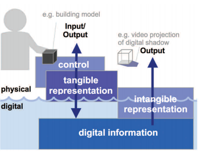

Eksamensspørgsmål 7
Tangible User Interfaces
Tangible User Interface (TUI)
A tangible user interface is a user interface in which a person interacts with digital information through the physical environment
Graphical User Interface (GUI)
The graphical user interface is a form of user interface that allows users to interact with electronic devices through graphical icons and audio indicator such as primary notation, instead of text-based user interfaces, typed command labels or text navigation
Fordele og ulemper (TUI)
| Fordele | Ulemper |
|---|---|
| Rigere bruger oplevelse | Ikke mobilt |
| Dybere forståelse for rumlige dimensioner | Mere komplekst at designe |
Fordele og ulemper (GUI)
| Fordele | Ulemper |
|---|---|
| Mobilt | Ringere bruger oplevelse |
| Simple forståelse | Begrænset rumlig potentiale |
Informationstanderen i Rosengårdcenteret